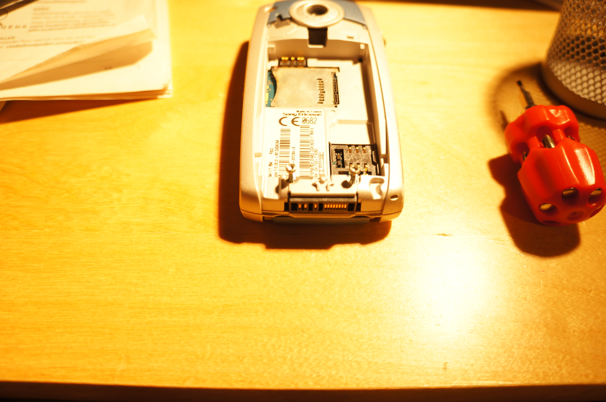
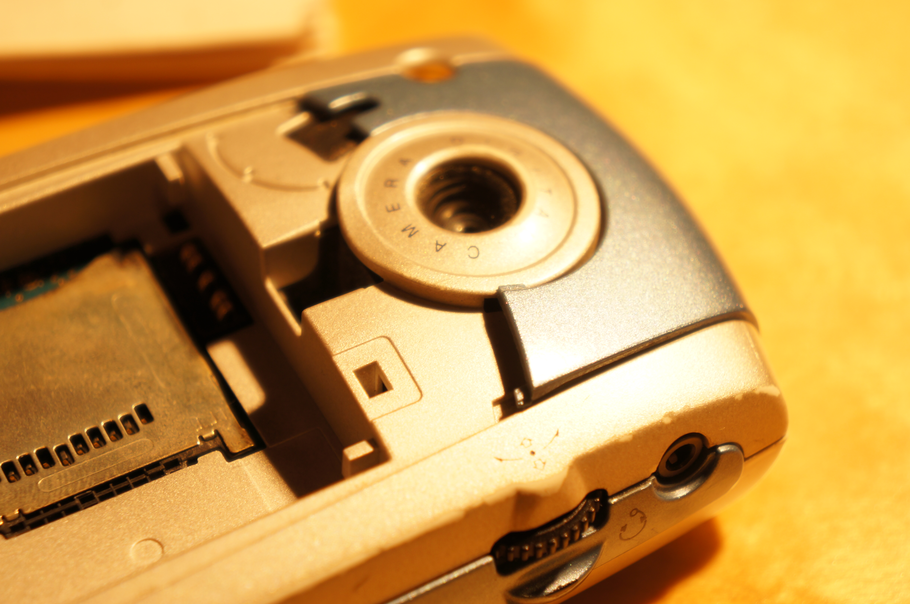
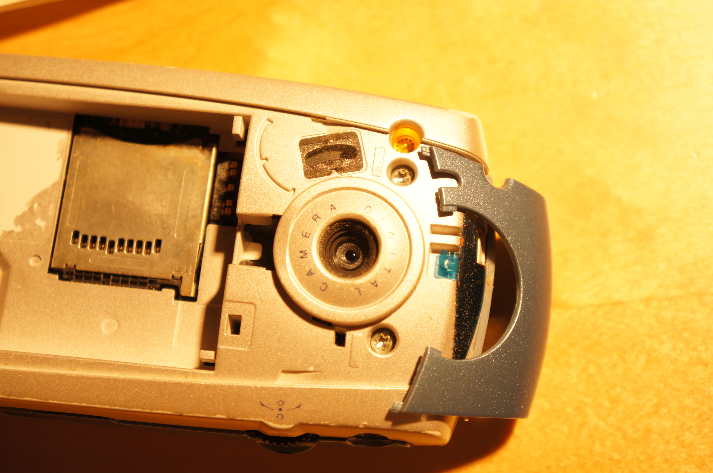
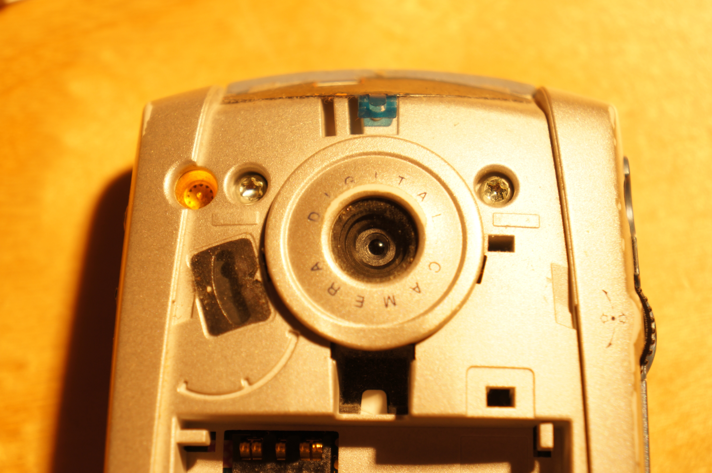
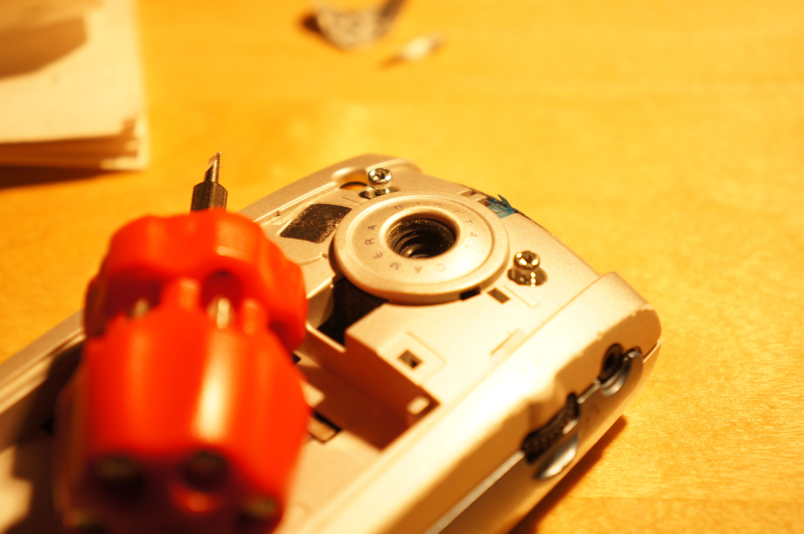
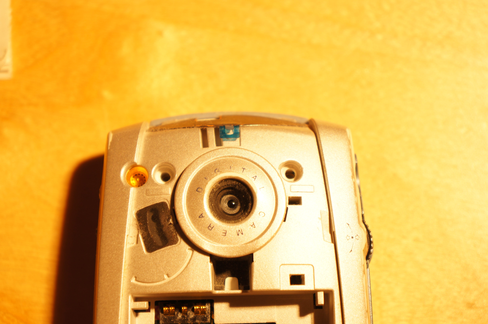
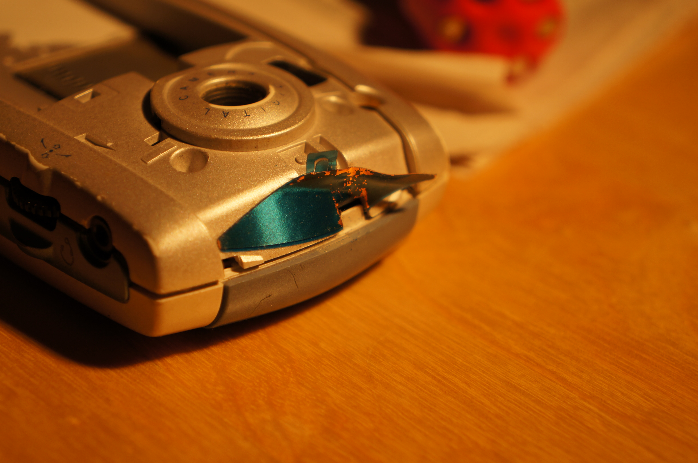
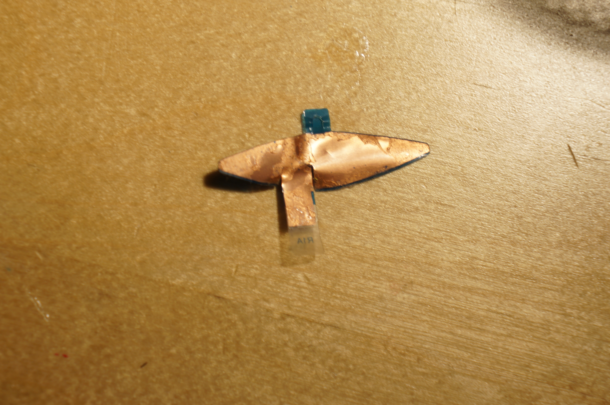
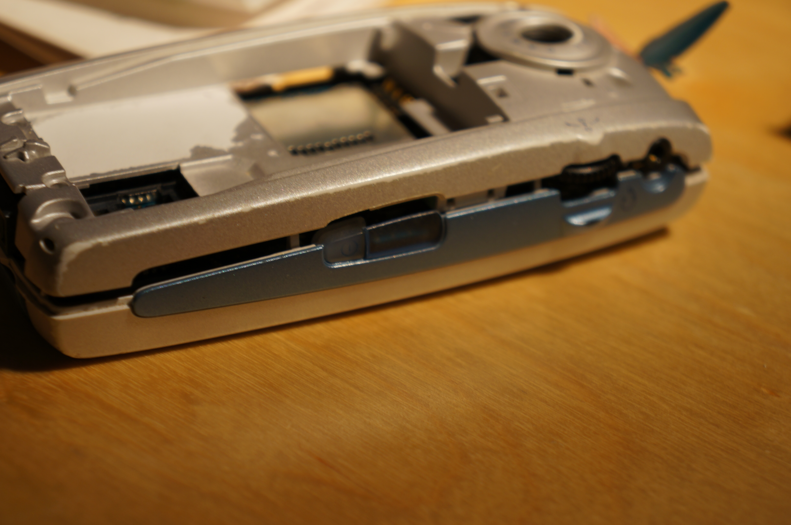
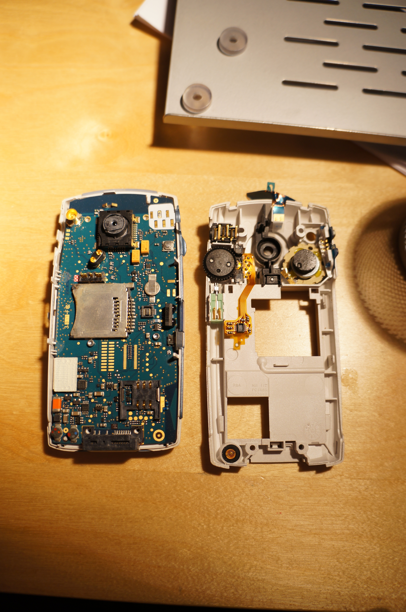

Sony Ericsson P800
In this website I will show step by step how I asembled/opened a Sony Ericsson P800. I can
begin with describing the Sony Ericsson P800. The phone was released 2002 and was
probably one of the first smartphones. It had a resistive touch screen and that means
that you either have to press with a stylus, your nail or just press hard for the
screen to react to your commands. In the modern smartphones a capacitive touch screen
is used for the increased responsiveness.
It took quite a while after the release of Sony Ericson P800 before smartphones with
touch screen was used in a broader scale than business men and hipster geeks. That was
because of two main reasons:
1. The screen technology couldn't make it possible for high resolution screens.
With a low screen resolution of 208x320 pixels the information that was vital for the
soul purpose of a smart phone could not reach the user in a user-friendly interface.
The low resolution screen forced you to aim carefully at the small screen. A
smartphone with a touch screen has to have a high resolution screen for it to be user
friendly.
2. The feeling you get with a stylus is not appealing and gives you the feeling
of not really being able to control the mobile as you want. On a resistive touch
screen you often miss buttons and press wrong. You had to either take your time and
aim carefully or do press quickly but taking the consequence of sometimes having to
redo the command.
Opening the phone
I start with opening the battery lid and removing the battery. As seen on the picture underneath, I start with removing the screws that holds the phone together. There are more than just those two screws that holds the phone together. 
To find the other screws I look under the blue shell that protects the upper part of the backside. It is easily removed.  
I found that there were two screws on the upper part of the phone and i started unscrewing them.   
I found that the protective blue shell also protected a film in copper. On the picture it is blue but if you look at the other side you can clearly see that it is copper.  
With all the screws gone I can start opening the phone. 
The main board
As you can see the backside is quite hollow. There is only a audio connector, a speaker, a vibrator, camera lens protection, two buttons, an operation wheel, the copper film and something undefined at the botom left corner. Something I find interesting is the fact that the audio-output needs six connections to the circuit whilst the speaker only needs two connections. I wonder if that will make a difference in sound quality beyond the lack of multi channel listening. 
For more extensive information about the components on the picture above I have split the different components into "6" separate pictures where every picture is a link that gives you deeper information.